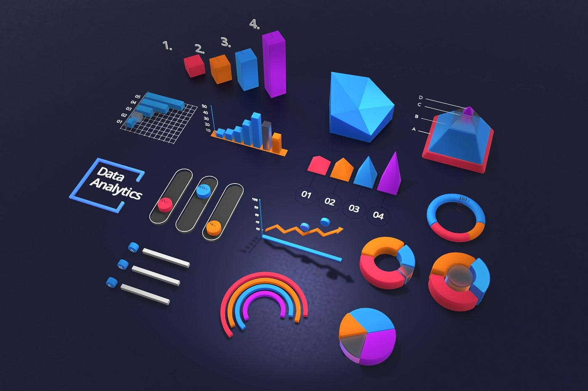
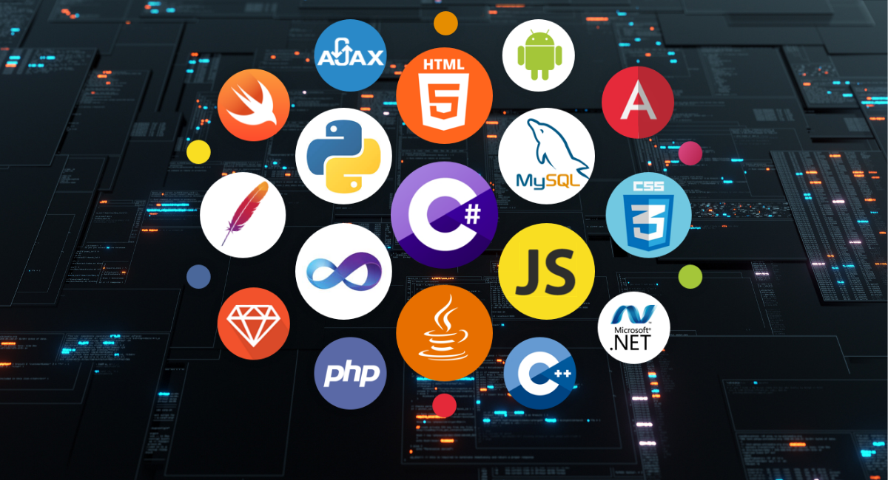

I am a dedicated data scientist with a strong background in science, holding a Master of Data
Science from Bellevue University and an advanced certificate in Data Science and Analytics from
Rutgers University. My expertise spans machine learning, statistical analysis, and data
visualization.
With a passion for transforming complex datasets into actionable insights, I specialize in
building predictive models, uncovering patterns through exploratory data analysis, and
developing interactive visualizations to support data-driven decision-making. My work bridges
the gap between raw data and strategic impact, helping organizations leverage data to solve
real-world problems efficiently and effectively.
Projects
Throughout my career, I have successfully led projects that involved:
- Machine Learning:
Developing and deploying sophisticated algorithms for
classification, regression, clustering, and anomaly detection. I have experience with
various machine learning frameworks and libraries, including TensorFlow, Keras, and
Scikit-learn. My work in this area has included designing end-to-end machine learning
pipelines, from data preprocessing and feature engineering to model training, evaluation,
and deployment.
- Statistical Analysis:
Conducting rigorous hypothesis testing, regression analysis,
and time-series forecasting to derive meaningful conclusions from data. My proficiency in
statistical software such as R has enabled me to perform complex analyses with precision. I
have applied these techniques to a wide range of domains, including finance, healthcare, and
marketing, providing actionable insights that drive business decisions.

- Data Visualization:
Creating dynamic dashboards and visual reports using tools like
Tableau, Power BI, and Python libraries (e.g., Matplotlib, Seaborn) to communicate insights
clearly and effectively. My visualizations are designed to be intuitive and impactful,
ensuring stakeholders can easily interpret and act on the data. I have also developed custom
visualizations to meet specific client needs, enhancing the overall user experience.
In addition to my technical skills, I possess strong communication and collaboration abilities,
allowing me to work effectively with cross-functional teams and present findings to both
technical and non-technical audiences. My ability to translate complex technical concepts into
understandable terms has been instrumental in driving stakeholder engagement and facilitating
data-driven decision-making.
I am committed to continuous learning and staying updated with the latest advancements in data
science and analytics. This commitment ensures that my work remains at the cutting edge of the
field, incorporating the latest methodologies and technologies to deliver optimal results. I
regularly participate in professional development opportunities, such as attending conferences,
completing online courses, and contributing to data science communities.
I am driven by the goal of helping organizations harness the power of data to make informed
decisions, optimize operations, and achieve strategic objectives. My expertise in data science,
combined with my dedication to excellence, positions me as a valuable asset in any data-driven
environment. I am eager to apply my skills and knowledge to new challenges, continuously
striving to deliver innovative solutions that drive success.
Skills:
- Languages:
- Python: 
Proficient in using Python for data analysis, machine learning, and
automation. Experienced with libraries such as Pandas, NumPy, Scikit-learn,
TensorFlow, and Keras.
- R: Skilled in statistical analysis and data visualization using R. Proficient
with packages like ggplot2, dplyr, and caret.
- HTML/CSS: Basic knowledge of web development, creating and styling web pages.
- SQL: Experienced in querying databases, performing data manipulation, and
managing relational databases.
- JavaScript (Basic): Basic understanding of JavaScript for enhancing web
functionality.
- Tools & Technologies:
- GitHub:
Proficient in version control and collaborative coding using Git and
GitHub.
- Jupyter Notebook: Experienced in using Jupyter for interactive data analysis
and visualization.
- Visual Studio Code: Skilled in using VS Code for coding and debugging.
- Google Colab: Utilizing Google Colab for cloud-based data analysis and
machine learning.
- Command Line Interface (CLI): Proficient in using CLI for file management,
version control, and automation.
- Tableau: Experienced in creating interactive dashboards and visualizations to
communicate data insights.
- Power BI: Skilled in using Power BI for data visualization and business
intelligence.
- Microsoft Excel: Proficient in data analysis, visualization, and automation
using Excel.
- Machine Learning & Analytics:
- Supervised & Unsupervised Learning:
Developing models for classification,
regression, clustering, and anomaly detection.
- Time Series Forecasting: Analyzing and predicting time-dependent data using
various forecasting techniques.
- Natural Language Processing (NLP): Applying NLP techniques for text analysis,
sentiment analysis, and language modeling.
- Model Evaluation & Tuning: Evaluating model performance and tuning
hyperparameters to optimize results.
- A/B Testing: Designing and analyzing A/B tests to evaluate the impact of
changes and make data-driven decisions.
- Feature Engineering: Creating and selecting features to improve model
performance.
- Data Wrangling: Cleaning, transforming, and preparing data for analysis.
- Predictive Analytics: Building predictive models to forecast future trends
and behaviors.
- Cloud & Deployment:

- AWS (EC2, S3):
Deploying and managing applications on Amazon Web Services.
- Google Cloud Platform (GCP): Utilizing GCP for cloud computing and data
storage.
- RESTful APIs: Developing and consuming RESTful APIs for application
integration.